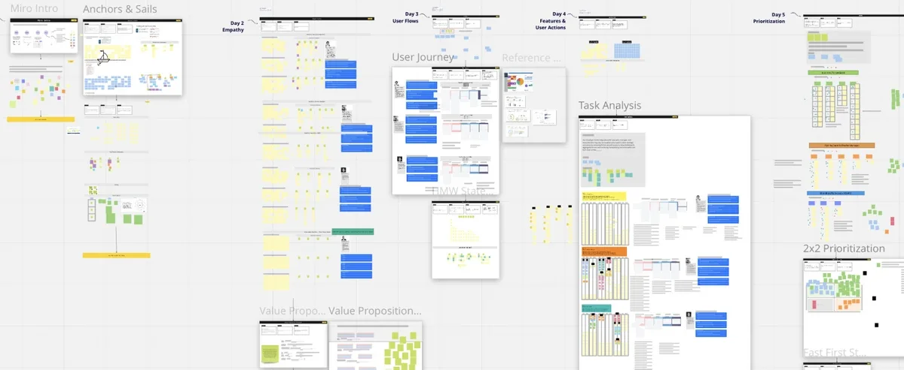
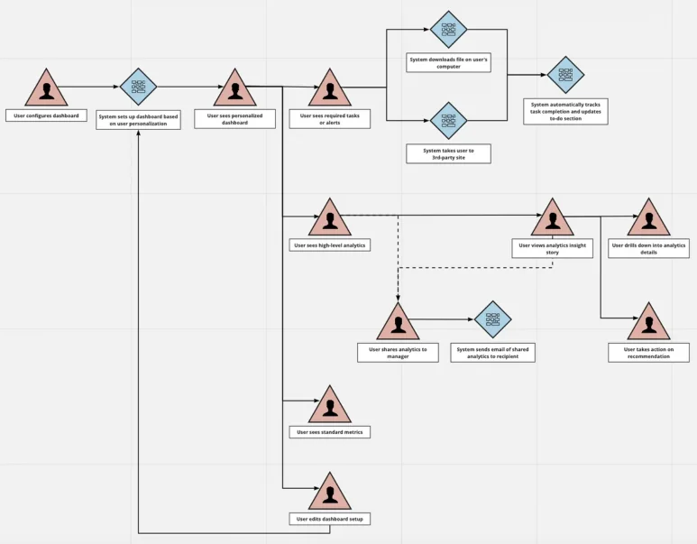
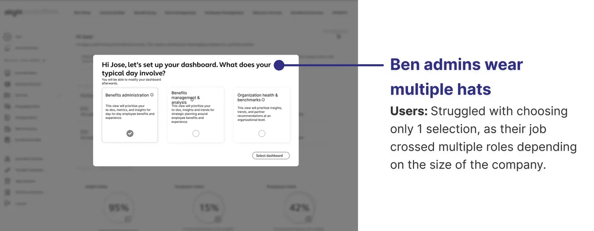
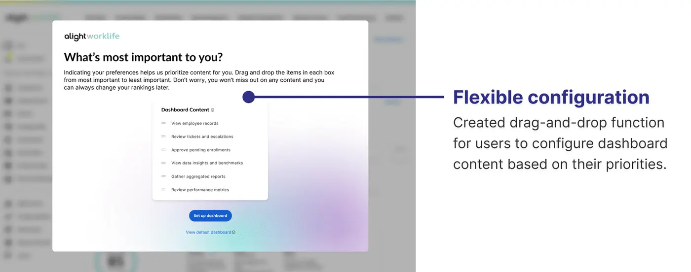
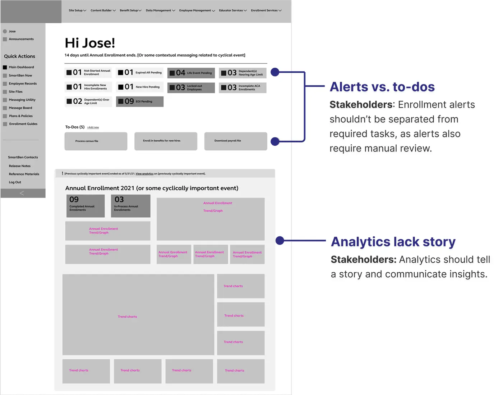
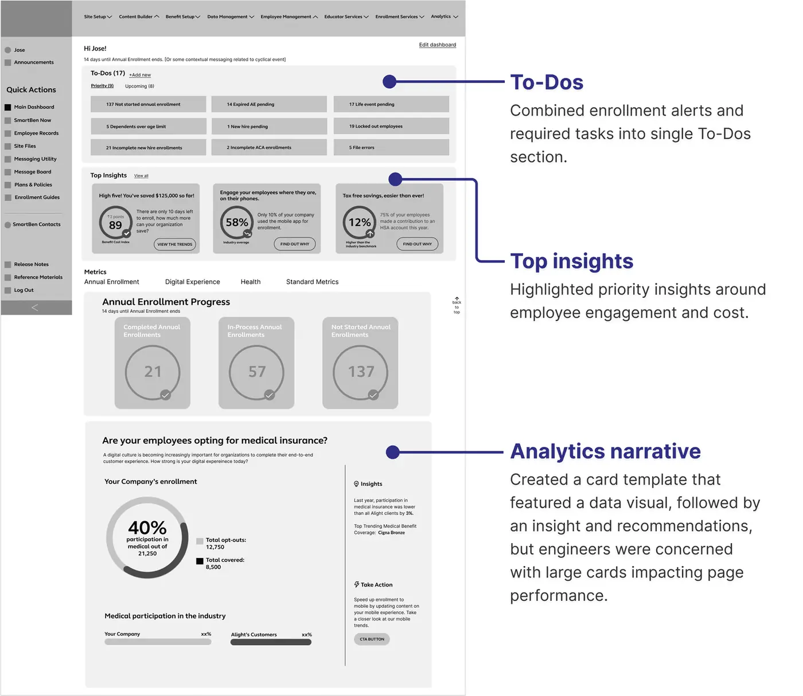
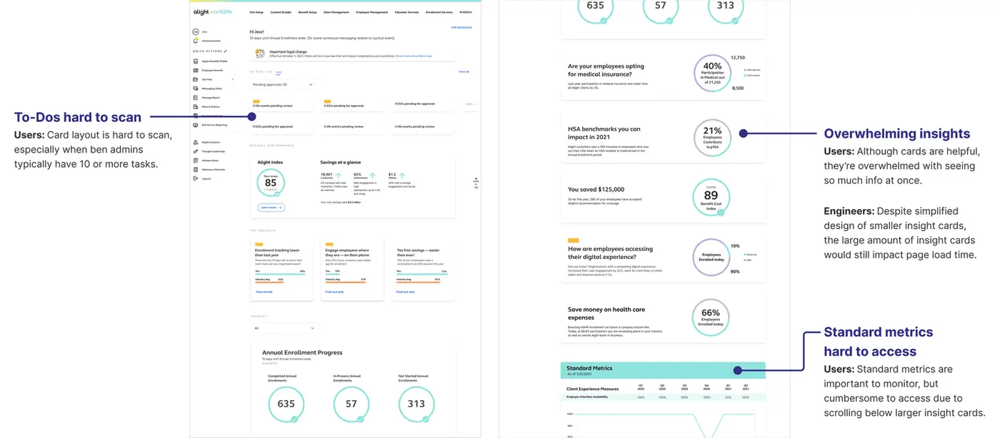
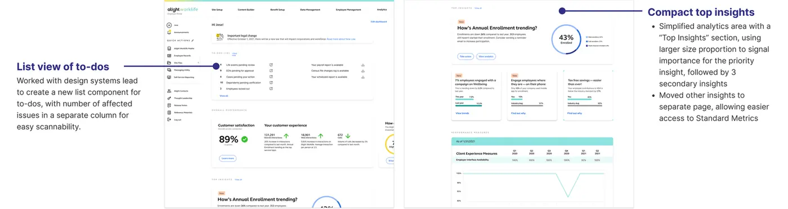
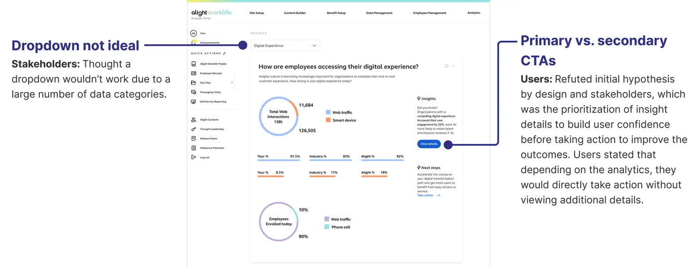
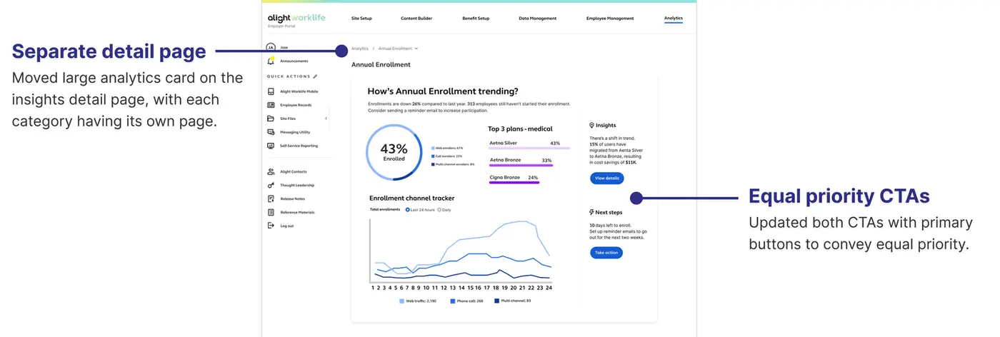

Benefits Admin Portal
From
Ambiguity
To
Clarity
The primary responsibilities of benefits administrators (ben admins) are to troubleshoot employee issues and process day-to-day administrative tasks, all while keeping a pulse on organizational metrics. Ben admins struggled with the existing portal's clunky interface and lacked confidence in their decision-making. The new portal design aimed to allow ben admins to be more efficient and strategic in their role by surfacing to-dos, insights from the analytics, and displaying standard metrics.
- Role
- Product design lead: Design direction and strategy
- Guidance for 2 junior product designers
- Team
- 2 junior product designers, 1 product manager, 1 analytics lead, 1 user researcher
- Timeline
- 10 weeks

Problem
The complicated site interface posed significant challenges for ben admins:
- Lack of confidence in decision-making, due to overwhelming and unclear presentation of data
- Excessive time spent on site usage training and repetitive, daily tasks, leaving little room for proactive initiatives
- Feel inadequate in contributing strategically to organization’s goals
Solution
To increase ben admins’ confidence and efficiency, the portal redesign focused on 3 key features.
Flexibility
Ability to personalize dashboard content based on user roles and priorities
Required Action Items
Administrative tasks and items that need troubleshooting
Key Analytics
Metrics that matter (trends, insights, actionable recommendations)
Prototype
Process
Design Thinking Sprint
To gain a shared understanding of the current user problem, ben admin personas, and MVP features for the new ben admin portal, I planned and facilitated a design thinking sprint. Over 5 days, I led activities and conversations with subject matter experts, designers, product managers, and stakeholders.

Key learnings from the sprint:
- Pain points: Due to the complex site interface, new ben admins require site usage training, which uses up valuable time and resources from the Human Resources team. Additionally, ben admins end up spending too much effort on the day-to-day tasks due to poor site usability and struggle to glean the "so what" behind the analytics.
- Top values: Top value drivers for ben admins are actionable insights, ability to perform their role with confidence, and a simple interface that doesn't require training to use
- The user: Ben admins' main responsibilities are to resolve issues and monitor key stats about the organization to proactively prevent escalation. The individual contributor focuses on tactical daily tasks, whereas the managerial roles are more strategic by proposing recommendations based on analytics. Ultimately, all ben admin users aim to meet overall team and company goals.
Persona Prioritization & User Flow
Three key personas emerged from the user sprint: ben admin, ben admin manager, and benefits director/CHRO. In collaboration with the product manager and stakeholders, we focused on the ben admin as the primary persona for the redesign, as the other two personas’ roles were less hands-on with key features of the portal. The manager would use the site mainly for team monitoring, and the director would rarely access the site at all and would receive key updates from managers during their meetings.
With a single persona in mind, I guided my designers to create a user flow to break down the complexities of the ben admin role into main features and pages of the ben admin portal.

Design Iterations
Dashboard Configuration
The initial dashboard configuration was based on preliminary user research and client feedback, where ben admins had distinct roles of tactical, analytical, or strategic.


Homepage
Due to minimal info available for content and analytics requirements, I guided my designers to create preliminary wires with "building blocks" of key features (enrollment alerts, required tasks, analytics) to get high-level buy-in from stakeholders, and to nudge subject matter experts to consider possibilities for specific content and analytics. Given the business priority around annual enrollment, the design featured enrollment stats up front, followed by additional analytics and supporting data.




Analytics Detail Page
To address the page load time, an early exploration of the homepage kept the large analytics card layout, and had a dropdown menu for users to browse various analytics categories, while focusing on one card at a time. Initially, the CTA for insights was deemed more important so users could truly understand the data before taking action.


Impact
With a more intuitive ben admin portal, employers were empowered to self-service analytics on their own, and make more informed decisions to impact their employee engagement.
Informed analytics team’s approach to creating a more simplified way to tell a story around analytics
Enabled employers to understand employee behavior across 4 million touchpoints, resulting in increased engagement in over 80 benefits categories
Prototype used by commercial sales team for client demos and meetings
Challenges & Key Learnings
As a product design lead, I had authority in making decisions directly with the product manager while coaching junior designers — both of which built my leadership skills.
- Prioritize for impact: Based on 3 personas identified in the design sprint, the initial project scope aimed to cater to all 3, resulting in numerous features with limited relevance to the primary user, the ben admin. By emphasizing the fact that ben admins spent the most time in the portal, I convinced the team to prioritize the MVP for this user and focused the scope accordingly.
- Proactively present designs to advance the project: Despite analytics being a key factor in the redesign, the analytics team struggled to articulate ideas and requirements for the portal. To prevent project delays, I guided my designers to create concepts based on research of other analytics experiences. This enabled the analytics team to see what was possible and pinpoint gaps, leading to clearer definition for the analytics section.
- Filter out the noise: Most meetings were “messy” with a lot of background information before reaching alignment on next steps, and not all meetings were productive for juniors. To help juniors focus on work that matters, I learned to find the right balance of providing clear action items and takeaways, while providing enough background info to set the context.